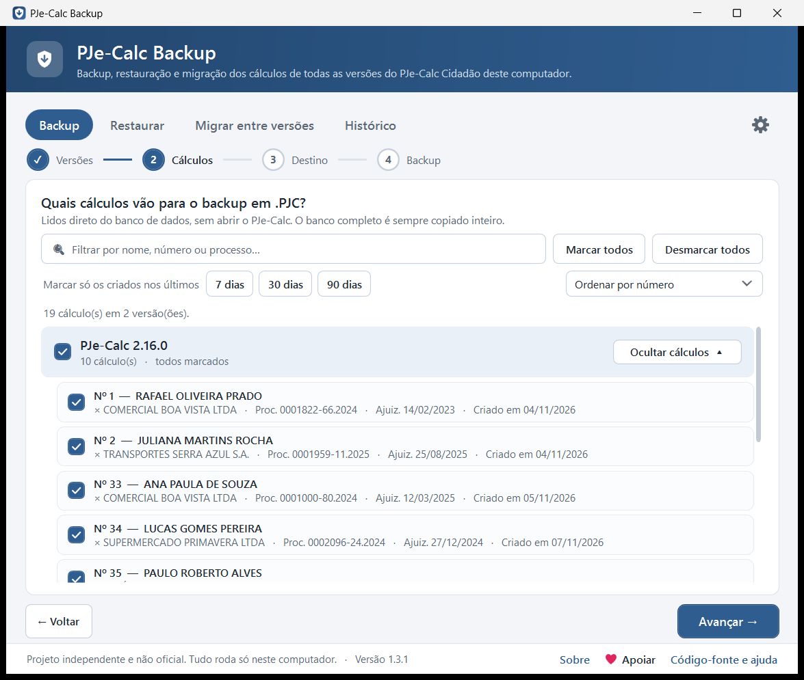
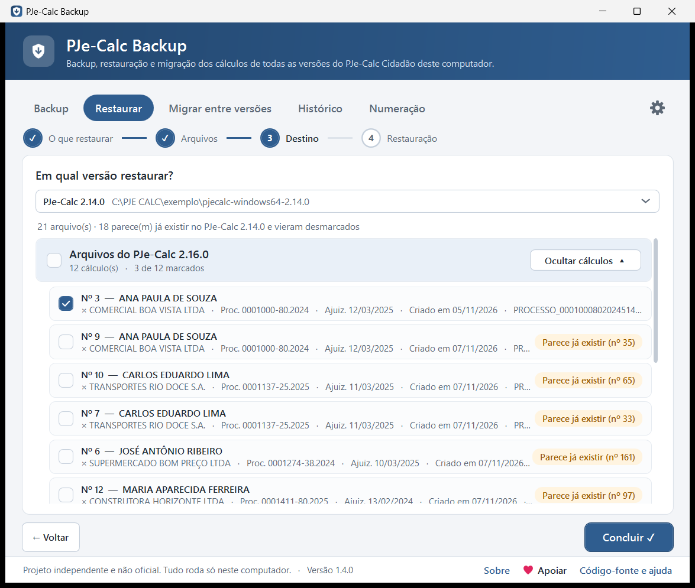
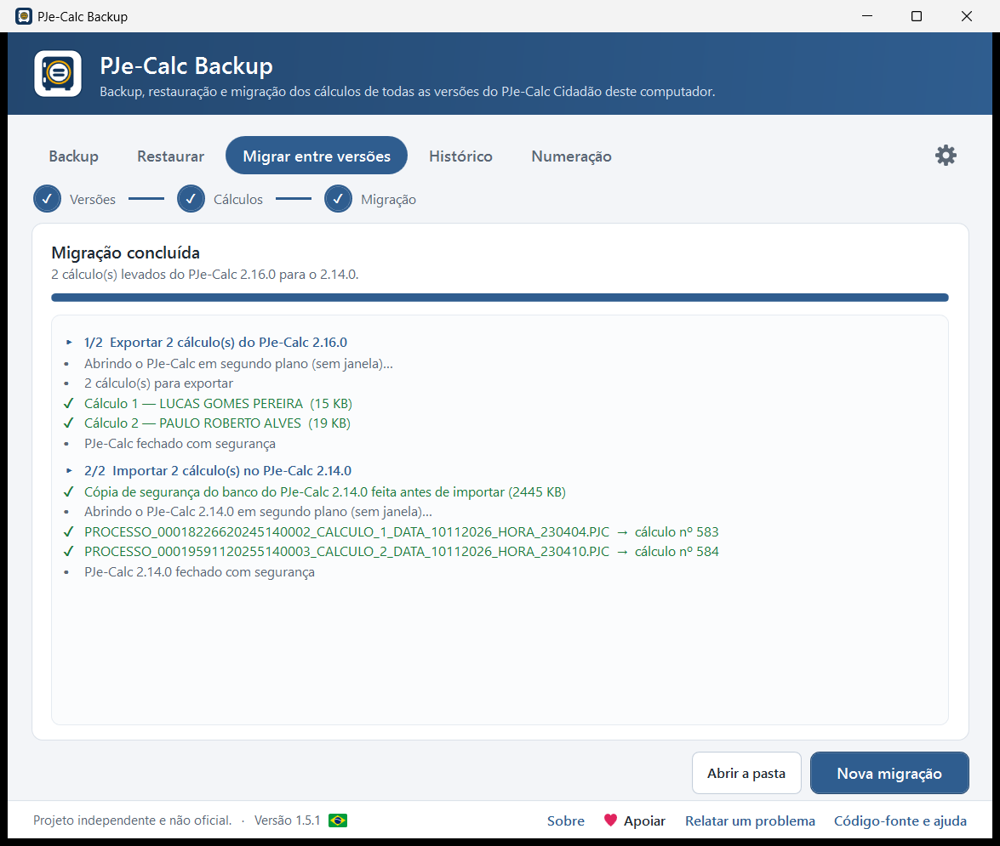
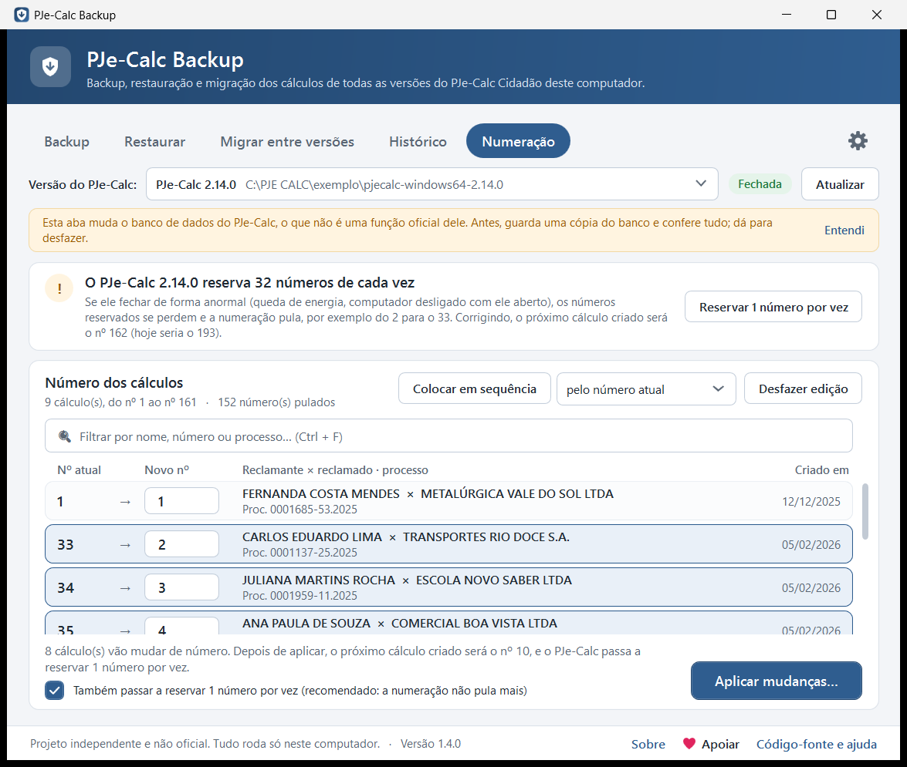
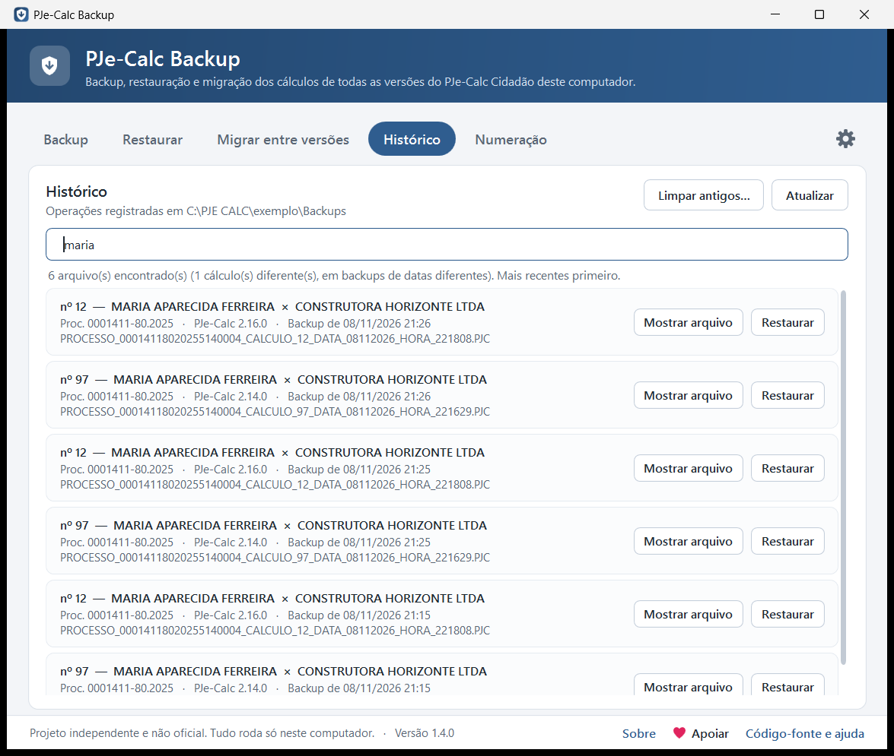
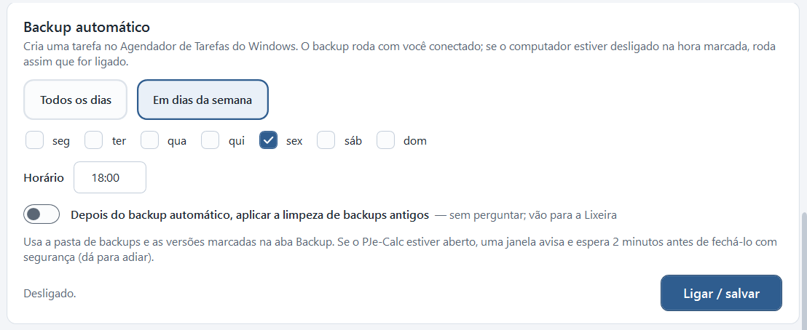
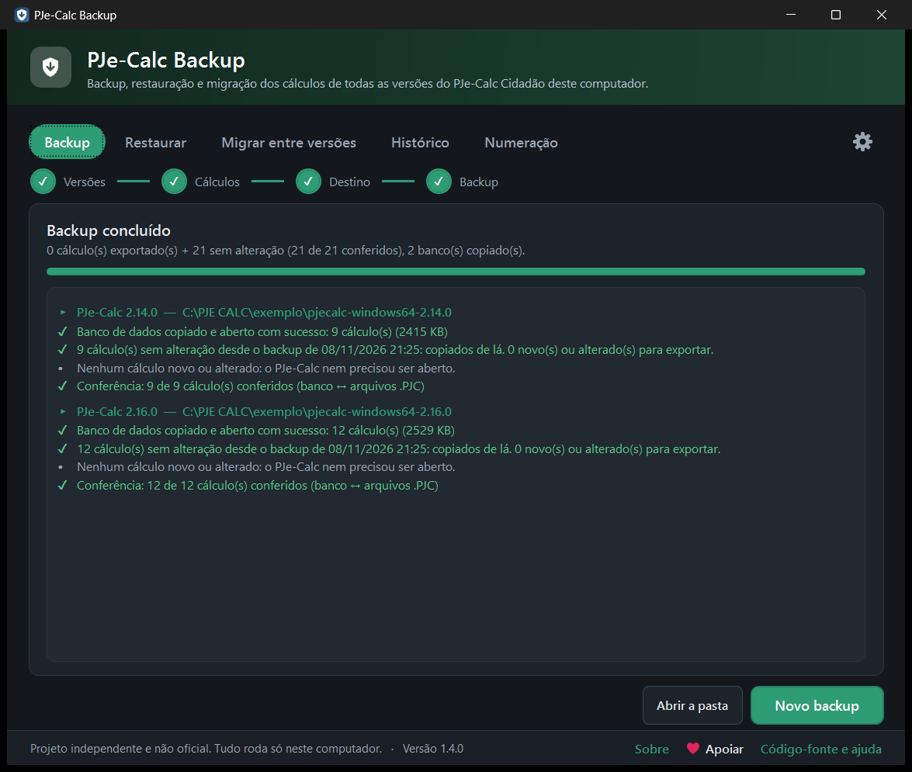
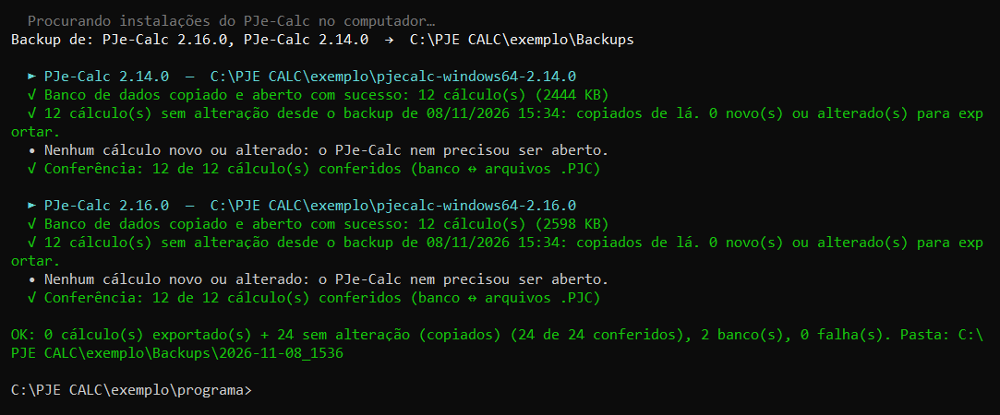

O PJe-Calc é desenvolvido pelo TRT da 8ª Região e adotado pelo CSJT em toda a Justiça do Trabalho. Este é um projeto independente e não oficial: não tem vínculo com o TRT da 8ª Região, com o CSJT ou com a equipe do PJe-Calc. As fotos desta página usam dados fictícios.
Por que usar
O PJe-Calc guarda os cálculos dentro da pasta de cada versão e não tem backup automático. Quando se instala uma versão nova, os cálculos antigos não vão junto.
Sem o programa
- Exportar cada cálculo pela tela, um por um, em cada versão
- Lembrar de fazer backup, e torcer para não esquecer
- Versão nova do PJe-Calc começa vazia
- Importar de novo cria cálculos duplicados
- Numeração pulando do 2 para o 33
Com o PJe-Calc Backup
- Todos os cálculos de todas as versões em poucos cliques, conferidos
- Backup automático nos dias e no horário escolhidos
- Migração da versão antiga para a nova de uma vez
- Os que já existem vêm desmarcados, sem duplicar
- Numeração em sequência: 1, 2, 3…
O que ele faz
Tudo em assistentes de poucas etapas, com um aviso antes de qualquer mudança. Escolha uma função:

Backup de todas as versões
Encontra sozinho as instalações do PJe-Calc, exporta cada cálculo em .PJC e copia o banco inteiro de cada versão.
- A lista é lida direto do banco, sem abrir o PJe-Calc
- Conferência no final: "21 de 21 conferidos"
- Backup rápido: só o que é novo ou mudou é exportado

Restauração sem duplicar
Traz de volta cálculos .PJC em qualquer versão do PJe-Calc, ou volta o banco inteiro para o dia do backup.
- Os que parecem já existir vêm desmarcados
- Guarda antes uma cópia do banco atual
- Dá para desfazer pelo Histórico

Migração entre versões
Instalou uma versão nova do PJe-Calc? Leve os cálculos da versão antiga para ela de uma vez.
- A versão de origem não é alterada
- O que já foi levado vem desmarcado
- Cópia do banco de destino antes de importar

Numeração em ordem
A numeração do PJe-Calc pula porque o banco reserva 32 números de cada vez. O programa corrige isso e põe os cálculos em sequência.
- Reserva de 1 número por vez: a numeração não pula mais
- Números em sequência (1, 2, 3…) ou um por um
- Feito numa cópia conferida do banco, com opção de desfazer

Histórico e busca
Todos os backups, restaurações, migrações e mudanças de numeração numa lista só.
- Acha um cálculo dentro de todos os backups pelo nome ou pelo processo
- Restaura só aquele cálculo com um clique
- Limpeza dos backups antigos, sempre pela Lixeira

Backup automático
Escolha os dias e o horário, e o backup roda sozinho pelo Agendador de Tarefas do Windows.
- Se o computador estava desligado na hora, roda quando ligar
- Avisa se um backup falhar ou deixar de rodar
- Funciona mesmo com o programa fechado

Do seu jeito
Tema claro, escuro ou seguindo o Windows, e 33 paletas de cores.
- Sons e notificações do Windows, que dá para desligar
- Atalhos de teclado para tudo
- Planilha (Excel) com todos os cálculos de todas as versões
Clique numa foto para ampliar.
Como usar
O primeiro backup leva poucos cliques: o programa já vem com tudo marcado.
Baixe e abra
Baixe o
PJeCalcBackup.exee dê dois cliques. Não pede senha de administrador.Instale, se quiser
Clique em Instalar na faixa do topo para ter atalhos na Área de Trabalho e no menu Iniciar.
Faça o backup
Na aba Backup, clique em Avançar duas vezes e em Concluir. Fica na pasta
BKP PJC PJECALC, na Área de Trabalho.Deixe automático
Em ⚙ → Backup automático, escolha os dias e o horário, e não precisa mais lembrar.
Apareceu "O Windows protegeu o computador"?
É normal na primeira vez: o programa não tem assinatura digital, que é paga. Clique em Mais informações e depois em Executar assim mesmo.
O código é aberto, e os arquivos são compilados pelo próprio GitHub a partir dele. O código SHA-256 de cada arquivo aparece na página da versão.
O passo a passo de cada tela, com fotos, está no guia completo.
Seguro por padrão
Feito para nunca deixar você sem os seus cálculos.
- Nunca encerra o PJe-Calc à forçaSe ele estiver aberto, é fechado como no "Sair" do ícone perto do relógio e reaberto no final.
- Dá para desfazerAntes de restaurar, migrar ou mudar a numeração, guarda uma cópia do banco.
- Nada é apagado sem perguntarA limpeza de backups antigos mostra a lista antes e manda para a Lixeira.
- Seus dados não saem do computadorA internet só é usada para ver se há versão nova, o que dá para desligar.
Também no CMD
O programa traz junto uma versão para o terminal, com as mesmas funções em menus simples e um modo automático para scripts.
PJeCalcBackup-Console.exe --backup --rapido
Perguntas frequentes
As mais comuns. Todas as outras estão nas perguntas frequentes do guia.
É de graça mesmo?
Sim, e vai continuar sendo. O código é aberto, com licença MIT. Quem quiser pode apoiar o projeto com um PIX de qualquer valor.
Em quais versões do PJe-Calc funciona?
No PJe-Calc Cidadão para Windows. Foi testado nas versões 2.14.0 e 2.16.0, e encontra sozinho todas as versões instaladas no computador.
Preciso fechar o PJe-Calc antes do backup?
Basta salvar o que estiver editando. Se o PJe-Calc estiver aberto, o programa o fecha com segurança e o reabre no final.
Como sei que o backup deu certo?
No final aparece a conferência, por exemplo "21 de 21 conferidos": cada arquivo gerado é aberto e comparado com o banco do PJe-Calc. Cada pasta de backup também tem um relatório com tudo o que foi feito.
Posso guardar os backups no OneDrive, no Google Drive ou num pendrive?
Sim. Basta escolher a pasta sincronizada ou o pendrive como pasta dos backups, nas configurações ou na etapa Destino.
Ao restaurar, o cálculo ganhou outro número. Por quê?
É o normal do PJe-Calc: cada cálculo importado vira um cálculo novo, com número novo. A aba Numeração do programa coloca os números em ordem depois.
Mudar o número dos cálculos é seguro?
Não é uma função oficial do PJe-Calc, por isso o programa guarda antes uma cópia do banco, faz tudo numa cópia, confere e só então troca. Dá para desfazer com um clique. A mudança só é liberada nas versões do PJe-Calc já conferidas.
Encontrei um problema. Como relato?
Abra uma issue no GitHub com a versão do PJe-Calc, a do programa (aparece no rodapé) e a do Windows. Nunca envie arquivos com dados das partes.
Apoie o projeto
O PJe-Calc Backup é gratuito. Se ele economizou o seu tempo, você pode apoiar com um PIX de qualquer valor, ou indicar o programa a colegas que usam o PJe-Calc.
7828ccd8-a4ad-4757-8acf-6d968c74c3a8 Pronto para o primeiro backup?
Leva poucos minutos e os seus cálculos ficam guardados.
Baixar grátis- Windows 10 ou 11 (usa o .NET Framework 4.8, que já vem no Windows)
- Microsoft Edge ou Google Chrome, usados de forma invisível para exportar os cálculos
- PJe-Calc Cidadão para Windows, aberto ao menos uma vez
- Não pede senha de administrador
backup-calculos.bat.Notas de cada versão no histórico de versões.